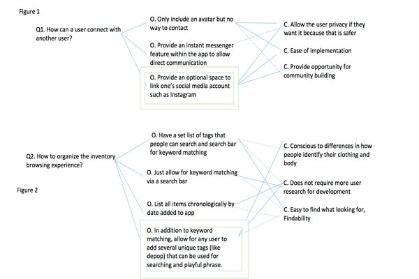
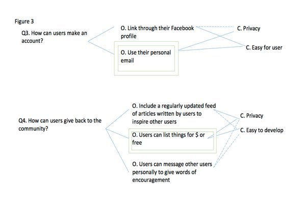

Final Deliverable
Problem Context
An increasing number of youth and emerging adults are identifying as transgender, and trans people experience discrimination within many domains of their lives. Many transgender youth and emerging adults utilize the internet as a tool to foster community and support while transitioning socially and/or physically. Changing appearance does not need to involve medical intervention, although some people pursue paths that include hormone therapy or surgical procedures. Examples of social transition include going by a preferred name and pronouns.
There are a limited number of affordable places to purchase clothing that are affirming to trans bodies. Clothing swaps are fairly common. However, clothing swaps for trans people often occur in metropolitan areas, excluding members that do not have access to LGBTQ resources. Additionally, if resources are out of price range, then people from low socioeconomic statuses cannot access them. For example, some people compress their chests, and chest binders are expensive and not sold at stores located in a typical mall. In absence of proper binders, some people use medical bandages which places their health at risk.
The purpose of this research project and design prototype is to examine and suggest features that a clothing exchange platform may implement to better include transgender/non-binary users. This solution should aim to further increase access to gender-affirming clothing. Due to the layers of discrimination that trans people experience, the solution should be affordable for users across many financial situations.
*Trans is being used as blanket term to include people whose assigned sex at birth does not match their gender identity
Competitive Analysis

A simple online search for keywords "clothing swap trans people" yields many results such as in person-clothing swaps and Tumblr. Within the online context, Tumblr blogs were identified as the only platform explicitly inclusive to trans audiences. However, the blogs do not provide secure checking out nor communication protocols. The other three systems analyzed have robust business operations.
Thinking Big: Sketching Alternatives

After comparing what existing platforms do, I sketched idealistic solutions to the problem. These eccentric solutions range from an endearing relationship between trans youth and older adults living in nursing homes exchanging skills to companies realizing the need to design clothing with trans bodies in mind (e.g. adapting jeans sizes to include both people with and without flared hips).
Provisional Personas
In addition to online exploration of existing online communities, I conducted several interviews (2 with faculty researchers that conduct research with the TNB youth and emerging adult community, 1 with a former employee of ThredUp, and 4 with students) to draft provisional personas in absence of robust qual/quant data. Some integrated feedback includes a focus on clothing that is viewed as especially relevant to trans people such as binders.
These personas were able to describe use cases for suggested features in a narrative format.
User Journey Maps

Integrating interview feedback and the provisional personas, user journey maps were sketched to describe the main activities when users may go shopping for gender-affirming clothing. Fear of being othered and concern for cost of clothing were major drivers for users' choices. I decided to make an app for trading or selling clothing for the design problem.
Questions, Options, Criteria (QOC) Analysis
 Although often there is not enough time to perform QOC in UX research and design projects, several options were vetted using exploration of existing online communities and previous interviews. Through this process and interviews, I decided to have users optionally include their existing social media accounts such as Instagram or Tumblr into their app profile. This took into consideration both user requests to remain private for safety and to allow for potential social interactions.
Low fidelity wireframe

I created wireframes using index cards, sticky notes, and glossy paper before transferring the ideas to Adobe XD
Prototype

The prototype centers on my primary persona's needs. As such, there is the option to purchase items such as a binders at a low cost (or free). In this case, J just will pay for the shipping costs for two binders to be delivered to them. Potentially this is possible from the generosity of Lukas (the secondary persona). Additionally, J can use this platform to find other users to follow or view on Instagram.
The prototype mimics the task flow slightly of Instagram's platform. This design choice was made because I learned through interviews that Instagram is often used by members of the trans community to find and make community.
Design's social impact
The final design provides
- the option for buyers or sellers to make themselves available for others to connect with.
- a means for people to obtain gender-affirming clothing that may have not otherwise had access.
- opportunities for people to feel like they are giving back to the transgender/non-binary community
- a platform that unlike the competitor platform Tumblr allows for a secure place to host transactions.
- The platform lastly provides a statement that current systems do not provide a favorable user experience for trans users.
The clothing world excludes trans bodies. The hope is that clothing companies and designers will start to design stores and clothing designs that are informed of these users' needs and body shapes.